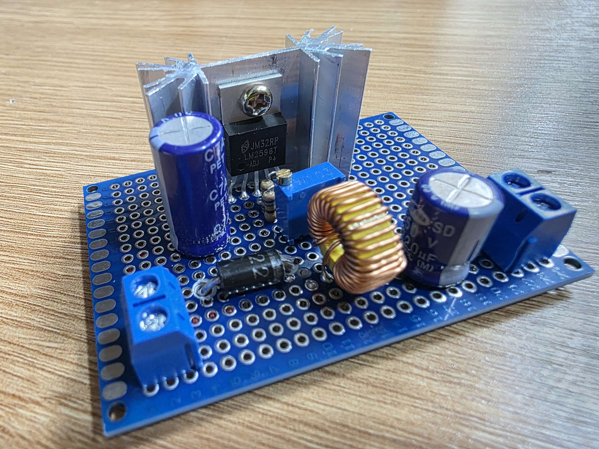
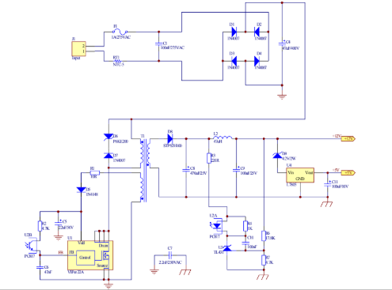
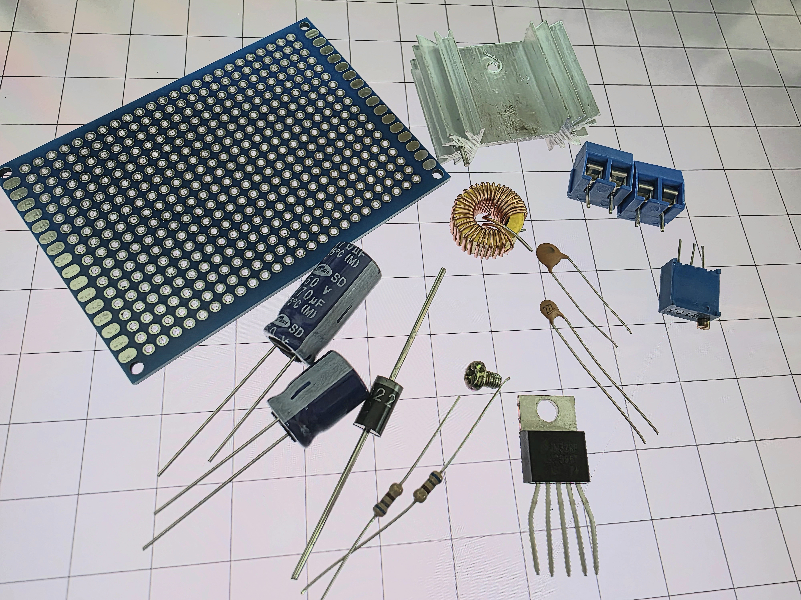
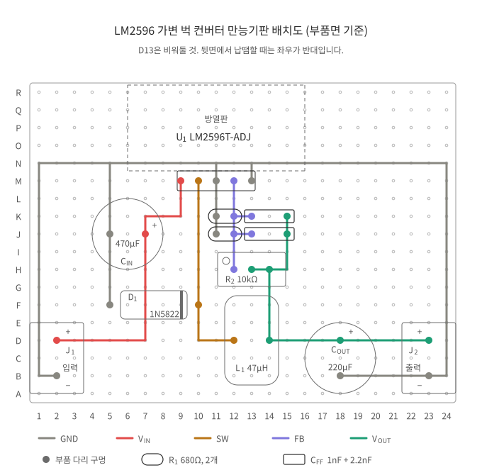
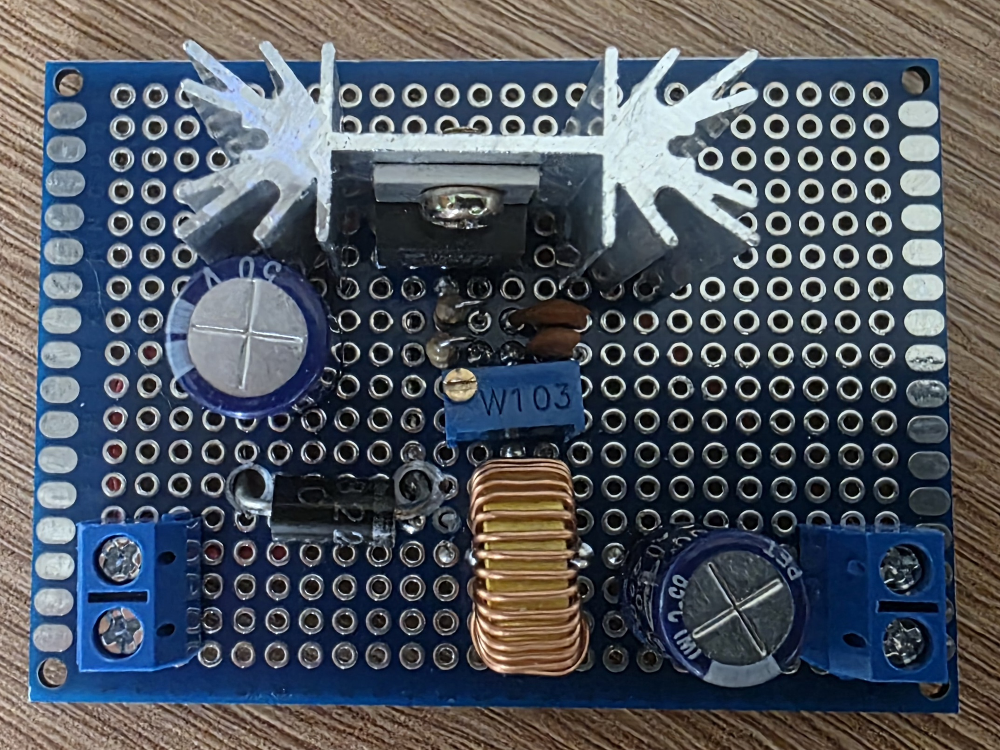
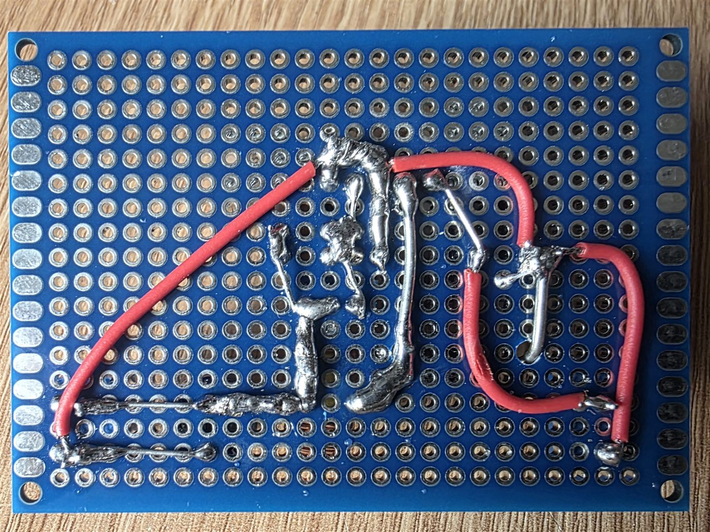

UB 납땜 실습 · 전원회로
세상에서 가장 많이 쓰이는 강압 컨버터를 완제품 모듈이 아니라 부품 단위로 직접 만듭니다.

LM2596은 세계에서 가장 많이 팔린 강압 컨버터 IC 중 하나입니다. 아두이노 프로젝트부터 산업용 장비까지, 전원이 필요한 곳이면 어디서나 쓰입니다. 알리익스프레스에서 천 원이면 완제품 모듈을 살 수 있지만, 이번 실습에서는 그걸 부품 단위로 직접 만듭니다.
데이터시트를 읽고 인덕터와 커패시터를 왜 그 값으로 고르는지 따져본 뒤, 만능기판에 배치하고 납땜합니다. 완성하면 12V 어댑터 하나로 3.3V, 5V, 9V를 자유롭게 뽑아 쓸 수 있는 가변 전원이 생깁니다. 앞으로 개인 프로젝트 전원부는 이걸로 해결하시면 됩니다.
오실로스코프로 스위칭 파형을 직접 보고 듀티비와 출력 전압의 관계를 확인하는 시간도 준비했습니다. 전력전자 수업에서 식으로만 봤던 내용을 실물로 만나는 자리입니다.

SMPS(스위칭 모드 전원공급장치)는 교류 220V를 직류로 바꿔주는 회로입니다. 우리가 쓰는 어댑터, 컴퓨터 파워가 전부 이 방식입니다.
이번 기본 실습(DC-DC 컨버터)보다 부품 수가 많고 시간도 더 걸리지만, 회로도와 설명서를 직접 읽으며 조립하는 경험을 제대로 할 수 있습니다. 완성 후에는 오실로스코프로 주요 지점의 파형을 측정해서 동작 원리를 직접 분석해볼 수도 있습니다.
관심 있으신 분은 따로 말씀해 주세요.
5번 ON/OFF 핀은 GND에 묶어 항상 동작 상태로 둡니다. 출력 전압은 R2를 돌려 조정하며, VOUT = 1.23 × (1 + R2/R1) 로 정해집니다.
| 기호 | 부품 | 사양 | 수량 |
|---|---|---|---|
| U1 | LM2596T-ADJ | TO-220 5핀, 스루홀 | 1 |
| L1 | 파워 인덕터 | 47µH, 정격 3A | 1 |
| D1 | 1N5822 | 쇼트키 3A 40V | 1 |
| CIN | 전해 커패시터 | 470µF 50V, 저ESR | 1 |
| COUT | 전해 커패시터 | 220µF 50V, 저ESR | 1 |
| CFF | 세라믹 커패시터 | 1nF + 2.2nF 병렬 = 3.2nF | 1nF 1개 2.2nF 1개 |
| R1 | 금속피막 저항 | 680Ω + 680Ω 병렬 = 340Ω, 1% | 680Ω 2개 |
| R2 | 가변저항 | 3296W, 10kΩ, 25턴 | 1 |
R1과 CFF는 딱 맞는 값의 부품이 없어 두 개를 병렬로 묶어 하나처럼 씁니다. 그래서 회로도상 기호는 하나지만, 수량 칸에는 실제로 챙길 부품 개수를 적었습니다.
| 품목 | 사양 | 수량 |
|---|---|---|
| 만능기판 | 5 × 7cm | 1 |
| 방열판 | 34 × 25 × 12mm | 1 |
| 체결 나사 | M3 볼트 | 1 |
| 스크류 터미널 | 2핀, 5.08mm 피치 | 2 |
| 배선재 | 난연성 전선(스풀) | 소량 |


부품면에서 본 그림입니다. 뒷면에서 납땜할 때는 좌우가 반대라는 점만 기억하세요.
1N5822는 다리가 굵어서 만능기판 구멍에 들어가지 않습니다. 납땜을 시작하기 전에 해당 위치 구멍 두 개를 2.5mm 드릴비트로 넓히세요.
구멍을 넓히면 그 자리의 금속 패드는 날아갑니다. 다이오드 다리는 옆 구멍의 패드에 납땜해서 고정하면 됩니다.
부품 하나를 꽂고 그 부품을 납땜하고, 다음 부품으로 넘어가는 식으로 진행합니다. 여러 개를 한꺼번에 꽂아두면 기판을 뒤집을 때 빠집니다.
키가 낮은 부품부터 하는 게 편합니다. 전해 커패시터 두 개와 LM2596은 키가 커서 가장 마지막에 하세요.
부품 다리를 최대한 배선으로 활용하세요. 자르기 전에 다리를 눕혀서 옆 구멍까지 연결하면 별도 전선이 줄어듭니다. 완성 사진을 참고하시면 감이 잡힙니다.
배선은 두 가지 방법을 씁니다. 옆 구멍처럼 짧은 구간은 납을 흘려서 이어주면 되고, 먼 구간은 전선으로 건너뛰어야 합니다.
전선으로 잇는 경우, 피복을 벗긴 심선을 먼저 꼬은 다음 납이 가닥 사이로 완전히 스며들도록 코팅해서 쓰세요. 이 과정을 건너뛰면 가닥이 풀려 옆 패드에 닿거나, 열이 제대로 전달되지 않아 납땜이 겉돌게 됩니다.
납은 열전도가 나빠서 납땜하는 동안 실납을 손으로 잡고 있어도 뜨겁지 않습니다. 하지만 부품 다리는 금속이라 열이 그대로 전달됩니다. 방금 납땜한 부품의 다리나 몸통을 무심코 잡으면 데기 쉽습니다.
기판을 손으로 받치거나 무언가를 집기 전에, 이게 뜨거울 자리인지 한 번 생각하고 잡는 습관을 들이세요.
옆 패드와 붙지 않았는지 확인하면서 진행하세요. 반대로 옆에 아무것도 없는 방향이면 납이 조금 튀어나가도 상관없습니다.
붙으면 안 되는 곳이 붙었다면 인두팁으로 덜어내거나, 솔더써커로 빨아내거나, 솔더윅에 플럭스를 발라 흡수시키면 됩니다.
TO-220 패키지는 다리 간격이 만능기판보다 좁아서 그대로는 안 들어갑니다. 5칸에 맞춰 벌려야 합니다.
맨 끝 다리부터 한 개씩 기판에 끼워가며 벌리는 게 가장 쉽습니다. 첫 번째 다리를 구멍에 넣고, 다음 다리를 그다음 구멍 위치에 맞춰 손으로 모양을 잡아 끼우고, 이런 식으로 다섯 개를 차례로 끼웁니다. 이미 끼워진 다리가 기준이 되어주기 때문에 간격이 저절로 맞습니다.
방열판 아래에 기판 고정용 금속 다리가 두 개 압착되어 있는데, 만능기판 구멍보다 굵고 간격도 맞지 않습니다. 롱노즈로 꺾어서 뽑아내세요.
LM2596의 금속 탭에 서멀 그리스를 쌀알 한 톨 정도만 올립니다. 볼트를 조이면 압력으로 저절로 퍼지기 때문에 펴 바를 필요는 없습니다. 두껍게 바른다고 좋아지지 않고 오히려 열이 덜 빠집니다.
방열판에 대고 M3 볼트를 드라이버로 조여 고정합니다.


필수는 아닙니다. 보드가 완성되고 시간이 남는 분만 해보시면 됩니다. 수업에서 식으로만 봤던 내용이 화면에 그대로 나옵니다.
이 실습의 핵심 장면입니다. 0V와 입력 전압 사이를 오가는 구형파가 보입니다.
링잉은 왜 생기나 — 인덕터 전류가 0까지 떨어지면 스위치도 다이오드도 모두 꺼져서, 스위치 노드가 어디에도 연결되지 않은 상태가 됩니다. 이때 인덕터에 남은 에너지가 주변의 기생 커패시턴스와 LC 공진을 일으켜 진동하다가 사그라듭니다. 무선 충전이나 라디오 동조 회로가 쓰는 것과 똑같은 LC 공진인데, 여기서는 의도하지 않게 생긴다는 점만 다릅니다.
스위치가 꺼지는 순간에 나타나는 더 빠른 링잉은 배선의 기생 인덕턴스가 원인입니다. 배선 루프가 클수록 심해지는데, 배치도에서 CIN과 D1을 IC 가까이 붙여둔 이유가 바로 이것입니다.
{kind=link}